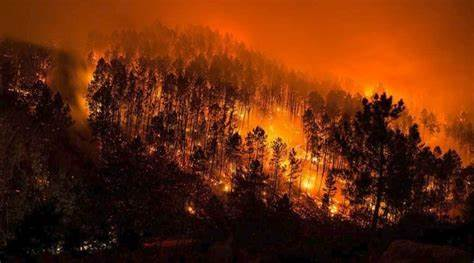
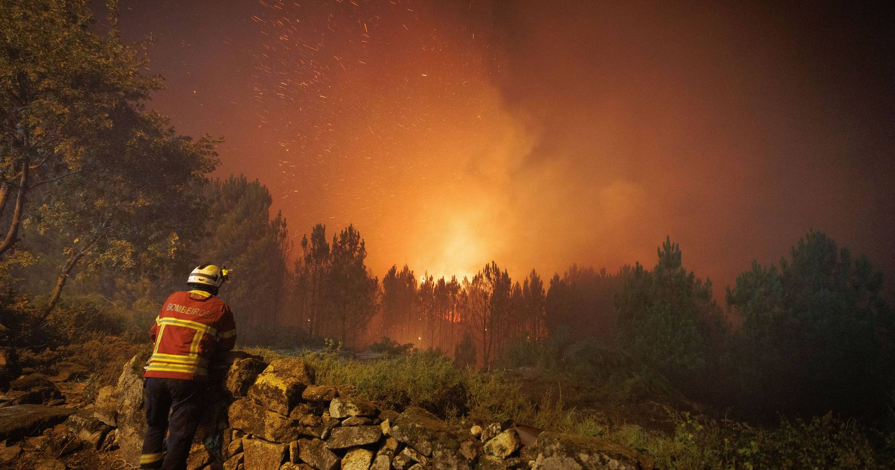
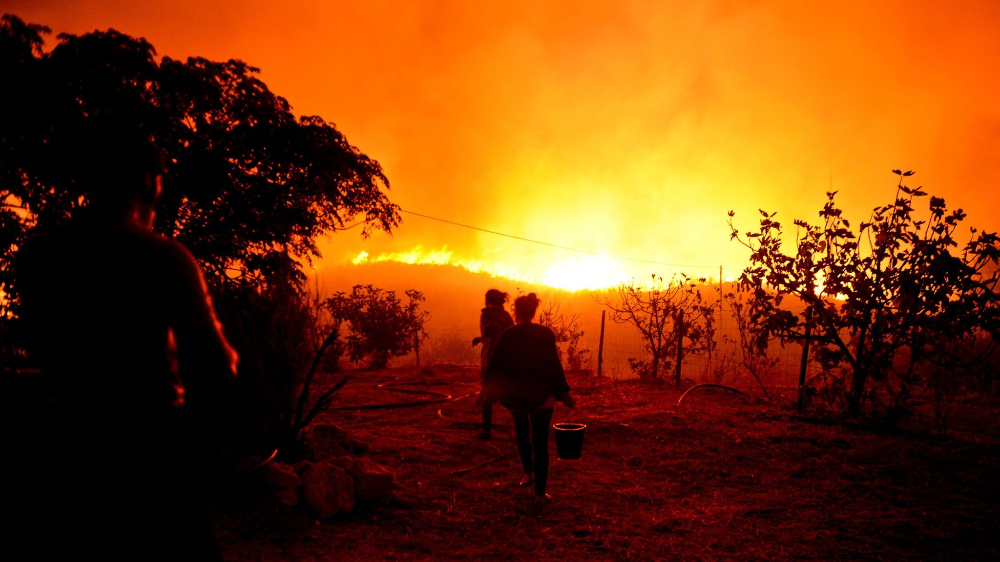

This dataset provides statistics on rural fires in Portugal, categorized by national, district, and county levels. It includes data on the number of fires, burned area (in hectares), fire causes, and fire duration (with a focus on fires lasting over 24 hours).
Num_IncendiosRurais: Total number of rural fires.
AreaArdPov: Burnt area in forest plantations (ha).
AreaArdMato: Burnt area in shrubland (ha).
AreaArdAgric: Burnt area in agriculture (ha).
AreaArdTotal: Total burnt area (ha).
NIncRur_0_1ha to NIncRur_1000_n_ha: Fires by burnt area size (from <1 ha to ≥1000 ha).
Fire Causes: Natural, negligent, intentional, reignition, undetermined, or not investigated.
Ninc_Sup24h: Fires lasting more than 24 hours.
Available at:
Data Visualization of Fire Patterns in Portugal
Explore Fire Data in Portugal
Burnt Area
The Burnt Area tab provides a yearly analysis of the areas affected by rural fires in Portugal...

Causes
The Causes tab provides a detailed overview of the various factors responsible for rural fires in Portugal...

Temporal Analysis
The Temporal Analysis tab focuses on examining how fire activity has changed over time...

i
Description:
This map visualizes the burnt area in each district, represented according to a color scheme. The intensity of the color corresponds to the extent of the burnt area, providing a clear view of fire activity across different regions.
Data Used:
- Ano (Year)
- Distrito (District)
- Num_IncendiosRurais (Number of Rural Fires)
- AreaArdTotal_IncendioInicioDist (Burnt Area in District at Fire Start): For years before 2017.
- AreaArdTotal_NoDistrito (Burnt Area in District): For years 2017 and onwards.
Interaction:
- Select Year: Select a specific year to visualize the data for that period.
- Fix Colorbar Range: You can fix the color bar range, allowing the map to account for the maximum and minimum values registered across the entire period (2001-2023), making it easier to compare across years.
- Toggle District Names: You can hide or show district names in the center of each district on the map.
Tooltip:
While hovering over a district, a yellow outline will highlight the district. Additionally, the table below the map will display the following details:
- District Name
- Area Burnt
- Number of Fires
District
Area Burnt (ha)
Number of Fires
i
Description:
This histogram displays the raw distribution of the burnt area data, with a stacked representation for each year. The stacked bars represent different land types: forest area, scrubland, and agricultural land. Each bar shows how these areas contribute to the total burnt area in a given year.
Data Used:
- Ano (Year)
- Distrito (District)
- Burnt Area Data by Land Type:
- AreaArdPov_IncendioInicioDist (Burnt Area in Forest at Fire Start): For years before 2017.
- AreaArdMato_IncendioInicioDist (Burnt Area in Scrubland at Fire Start): For years before 2017.
- AreaArdAgric_IncendioInicioDist (Burnt Area in Agricultural Land at Fire Start): For years before 2017.
- AreaArdPov_NoDistrito (Burnt Area in Forest): For years 2017 and onwards.
- AreaArdMato_NoDistrito (Burnt Area in Scrubland): For years 2017 and onwards.
- AreaArdAgric_NoDistrito (Burnt Area in Agricultural Land): For years 2017 and onwards. Interaction:
- Select Year: Use the year dropdown in the map container to select the desired year for the histogram data.
Tooltip:
When you hover over the bars in the histogram, the tooltip will display the following information:
- District Name
- Land Type (Forest, Scrubland, Agricultural)
- Burnt Area (in hectares)
i
Description:
This histogram displays the number of fires within different area categories for each district, on a yearly basis. The categories range from small areas (0 to 1 ha) to large areas (1000 ha and above). The data is shown both in its raw form (actual number of occurrences) and normalized for easier comparison across districts.
Data Used:
- Ano (Year)
- Distrito (District)
- NIncRur_0_1ha (Number of Fires in 0-1 ha)
- NIncRur_1_10ha (Number of Fires in 1-10 ha)
- NIncRur_10_20ha (Number of Fires in 10-20 ha)
- NIncRur_20_50ha (Number of Fires in 20-50 ha)
- NIncRur_50_100ha (Number of Fires in 50-100 ha)
- NIncRur_100_500ha (Number of Fires in 100-500 ha)
- NIncRur_500_1000ha (Number of Fires in 500-1000 ha)
- NIncRur_1000_n_ha (Number of Fires in 1000 ha and above)
Interaction:
- Select Year: Use the year dropdown in the map container to select the desired year for the histogram data.
- Zooming the Y-Axis: Use the range slider to zoom into specific ranges and focus on particular intervals of fire counts.
- Normalized vs Actual Data: Toggle between the normalized stacked bar representation and the actual number of occurrences to visualize either the proportional distribution or the raw counts of fires across different area categories.
Tooltip:
- When viewing the actual number of occurrences, the tooltip will display:
- District Name
- Number of Fires in that category.
- When viewing the normalized chart, the tooltip will display:
- District Name
- Percentage of Fires in that category relative to the total for that district.
i
Description:
This dot plot visualizes the distribution of various causes of fires in percentage.
Data Used:
- Ano (Year)
- Distrito (District)
- Concelho (Council)
- NInc_Natural (Number of fires caused by natural causes)
- NInc_Negligente (Number of fires caused by negligence)
- NInc_Intencionais (Number of intentional fires)
- NInc_Reacendimentos (Number of fires due to rekindling)
- NInc_Desconhecida (Number of fires with unknown cause)
- NInc_NaoInvestigados (Number of uninvestigated fires) Interaction:
You can filter the data by year, district, and sort by cause of fire.
Tooltip:
When you hover over the lines of points in the dotplot, the tooltip will display the following information:
- Type of data (Year, District, Council)
- The number of fires caused by each type of cause
i
Description:
This spiderchart allows you to compare data on the various causes of fire from different years, districts and counties.
Data Used:
- Ano (Year)
- Distrito (District)
- Concelho (County)
- NInc_Natural (Number of fires caused by natural causes)
- NInc_Negligente (Number of fires caused by negligence)
- NInc_Intencionais (Number of intentional fires)
- NInc_Reacendimentos (Number of fires due to rekindling)
- NInc_Desconhecida (Number of fires with unknown cause)
- NInc_NaoInvestigados (Number of uninvestigated fires) Interaction:
You can filter the data by year, district, and county with a maximum of 3 selections for each.
i
Description:
This scatter plot visualizes the relationship between the number of fire occurrences and the total burnt area for each district over the years. The Y-axis represents the number of fires, while the X-axis shows the total burnt area. Each point on the plot corresponds to a specific district for a given year. Points representing the same district are always colored the same, allowing you to track changes over time for that district.
Data Used:
- Ano (Year)
- Distrito (District)
- AreaArdTotal_NoDistrito (Total Burnt Area in the District: For years 2017 and onwards)
- AreaArdTotal_IncendioInicioDist (Total Burnt Area in the District: For years before 2017)
- Num_IncendiosRurais (Number of Fires)
Interaction:
- Select Districts: Use the dropdown to select and highlight specific districts on the scatter plot.
- Select Years: Choose the desired years to filter the data shown in the plot.
- Hide/Show Points: You can toggle the visibility of non-highlighted points to focus on the selected districts.
Tooltip:
When you hover over a point on the scatter plot, the tooltip will display:
- District Name
- Year
- Total Number of Fires
- Total Burnt Area (in hectares)
All
All
i
Description:
This line plot visualizes the trends over time in burnt areas for various districts. It shows the burnt area across different land categories (Forest, Scrubland, Agricultural) and the total burnt area, allowing users to observe the changes in fire data across multiple years. Each line represents a specific category, helping to compare how different types of land are affected by fires over time.
Data Used:
- Ano (Year)
- Distrito (District)
- AreaArdPov_IncendioInicioDist (Burnt Area in Forest at Fire Start): For years before 2017.
- AreaArdMato_IncendioInicioDist (Burnt Area in Scrubland at Fire Start): For years before 2017.
- AreaArdAgric_IncendioInicioDist (Burnt Area in Agricultural Land at Fire Start): For years before 2017.
- AreaArdPov_NoDistrito (Burnt Area in Forest): For years 2017 and onwards.
- AreaArdMato_NoDistrito (Burnt Area in Scrubland): For years 2017 and onwards.
- AreaArdAgric_NoDistrito (Burnt Area in Agricultural Land): For years 2017 and onwards.
- AreaArdTotal_NoDistrito (Total Burnt Area in the District): For years 2017 and onwards.
- AreaArdTotal_IncendioInicioDist (Total Burnt Area in the District): For years before 2017.
Interaction:
- Show/Hide Max/Min: Allows users to toggle the visibility of the maximum and minimum values for each category (forest, scrubland, agricultural, total).
- Show/Hide Line: Users can toggle the visibility of individual lines for each category to focus on specific data.
- Select District: Choose the district you want to observe from the dropdown to focus the analysis on that area.
Tooltip:
When you hover over a point on the line plot, the tooltip will display:
- District Name
- Year
- Burnt Area (in hectares)
- Category (Forest, Scrubland, Agricultural, Total)